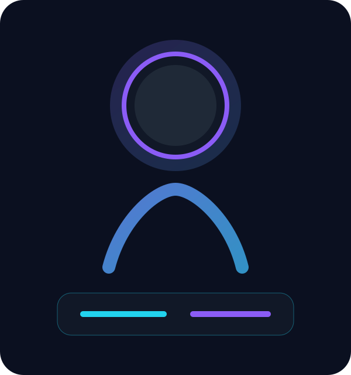

Portfolio engineer / 2026
Diseño web premium con mentalidad técnica real.
Este sitio fue rediseñado con fondo galaxia animado, cursor interactivo, secciones con movimiento estilo Apple, chatbot local tipo ChatGPT y una base preparada para conectar repositorios de GitHub en vivo.

Carlos Di Piazza
Analista Programador
Soporte TI, infraestructura, desarrollo web y mejora continua con foco en soluciones funcionales.
Diferencial
Un portafolio que se siente como producto.
No es solo una página informativa. Ahora funciona como experiencia digital: narrativa visual clara, identidad técnica, movimiento cuidado y componentes pensados para destacar tu perfil profesional.
✦
Fondo galaxia animado
Canvas dinámico con desplazamiento suave según el puntero para lograr profundidad sin recargar la navegación.
◎
Estética tipo ingeniero senior
Tipografía limpia, jerarquías visuales fuertes, paneles técnicos y contraste diseñado para mostrar dominio profesional.
↗
Preparado para GitHub Pages
Estructura simple, sin dependencias de build, ideal para publicar rápido y mantener fácilmente.
Narrativa visual
Animaciones estilo Apple, pero con identidad propia.
Paso 01
Entrada cinematográfica del héroe
El inicio prioriza mensaje, valor profesional y percepción premium desde el primer scroll.
Paso 02
Paneles y tarjetas con profundidad
Capas translúcidas, sombras suaves y elementos flotantes para una interfaz más madura.
Paso 03
Proyectos y datos con contexto
La información no aparece suelta: cada bloque se organiza como una vitrina de producto profesional.
Paso 04
Interacción precisa
Cursor reactivo, chips, transiciones y llamadas a la acción diseñadas para invitar a explorar.
Asistente local
Chatbot estilo ChatGPT, integrado al portafolio.
Responde preguntas sobre experiencia, estudios, habilidades, contacto y conexión con GitHub usando datos locales del CV. Funciona sin servidor y se puede ampliar más adelante con API real.